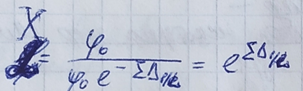

1. Дельта-электроны это
– электроны среды, получившие при столкновении энергию достаточную для ионизации атомов
2. Сечение Комптон-эффекта, характеризующее вероятность рассеяния на отдельном атоме, растет прямо пропорционально зарядовому числу в степени
– 1
3. Массовый коэффициент ослабления не зависит от
– плотности вещества
4. Рентгеновское излучение состоит
– из тормозного и характеристического излучений
5. Продолжите реакцию радиационного захвата 115In + n ->
– 116In + y
6. Косвенно ионизирующее излучение это
– ионизирующее излучение, состоящее из незаряженных частиц, которые могут создавать непосредственно ионизирующее излучение и (или) вызывать ядерные превращения (нейтроны, фотоны)
7. Изотопы этого элемента имеют сечения захвата тепловых нейтронов выше, чем у 10B, и используются в нейтрон-захватной терапии
– Gd
8. Реакция (A, Z) + n -> (A+1, Z) + y называется
– радиационный захват
9. Из формулы Вайцзеккера следует, что высота барьера давления обращается в нуль при
– Z2/A > 49
10.При комптоновском рассеянии энергия фотона стремится к 256 кэВ, если угол рассеяния равен
– 180
11.В спектре комбинационного рассеянного присутствуют частоты, равные сумме частоты падающего излучения и колебательных частот вещества. Это так называемое
– антистоксово рассеяние
12.При фотоэффекте часть энергии первичного у-кванта преобразуется в энергиектроны и электроны Оже, часть выделяется в виде
– Характеристического излучения
13.Сущность комбинационного рассеяния состоит в появлении в спектре рассеянного света новых частот, являющихся комбинациями частот падающего излучения и
– Собственных частот молекулы (колебательных и вращательных)
14.Минимальная масса делящегося вещества, при которой в нем может происходить самоподдерживающаяся ядерная реакция деления
– Критическая масса
15.Массовый коэффициент ослабления равен
– Отношению линейного коэффициента ослабления к плотности вещества
16.При тормозном излучении зависимость излучаемой энергии от рассеивающего центра
– Прямо пропорционально квадрату заряда
17.Тормозное излучение – это
– электромагнитное излучение частицы, возникающее в результате ее торможения при взаимодействии с электрическим полем атомного ядра
18.При комптоновском рассеянии энергия фотона стремится к 511 кэВ, если угол рассеяния равен
– 90
19.Уравнение Бете-Блоха
–
20.Согласно закону Мозли, корень квадратный из частоты спектральной линии характеристического излучения элемента есть линейная функция его
– Порядкового номера
21.Диапазон относительных скоростей, при которых наблюдается излучение Вавилова-Черенкова
–
22.Единица измерения массового коэффициента ослабления
– См2/г
23.Этот процесс деления ядер энергетически выгоден для всех бета-стабильных ядер с массовым числом А
– >100
24.Величина имеет название
– Возраст нейтронов
25.Рэлеевское рассеяние: интенсивность рассеивающего средой света обратно пропорциональна длине волны падающего света в степени
– 4
26.Вероятность фотоэффекта зависит от
– Зарядового числа Z атома
27.Деление атомных ядер нейтронами имеет огромное практическое преимущество по сравнению с другими способами. В частности, это связано с тем, что пороговое значение кинетической энергии для нейтрона в сравнении с другими частицами
– меньше
28.При работе электронных микроскопов закон Мозли используется для
– Анализа химического состава вещества
29.От хорошего замедлителя требуется, чтобы он имел
– Малое сечение поглощения
30.Величина, используемая как мера риска возникновения отдаленных последствий облучения всего тела человека и отдельных его органов и тканей с учетом радиочувствительности
– Эффективная доза
31.Предельный вакуум диффузионного насоса
– 10-5 па
32.Комптоновская длина волны для электрона это
–
33.Дисперсионная составляющая поверхностной энергии (метод Фоукса) зависит в основном от
– От наличия полярных групп ?
34.Первым замедлителем по величине замедляющей способности является
– вода
35.При комптоновском рассеянии фотон не теряет свою энергию, если угол рассеяния равен
– 0
36.Эффект Вавилова-Черенкова характерен
– Для заряженных частиц
37.Под взаимодействием излучений с веществом понимают
– первичные элементарные акты взаимодействия ионизирующих частиц с веществом, которое происходит под действием кулоновских, электромагнитных и ядерных сил
38.Барьерным разрядом называют разряд в узком газовом зазоре между плоскими или коаксиальными электродами, один из которых (или оба)
– Покрыт слоем твердого диэлектрика
39.Коэффициент ослабления за счёт комптоновского рассеяния нюК можно представить в виде
–
40.Величина пробега заряженной частицы зависит от
– Массы, заряда, энергии частиц и характеристик среды
41.Оптическая плотность это
–
42.Вероятность образования электрон-позитронных пар с увеличением Ey
– Растет
43.Эффект Комптона – это процесс рассеяния гамма-квантов на свободных электронах вещества и на электронах внешней оболочки атома, в результате которого гамма-квант с уменьшенной энергией меняет направление своего движения, а часть энергии фотона передается
– электрону
44.Деление возможно в том случае, когда энергия, высвобождающаяся при делении
– Е > 0
45.Формула позволяет оценить
– Диапазон энергии гамма-квантов, для которых характерно фотоэффект
46.Основными дозообразующими радионуклидами внутреннего облучения при использовании строительных материалов являются
– 238U и 235U
47.Сечения взаимодействия нейтронов с ядрами в среднем растут по закону
–
48.В формуле сечения взаимодействия величина это
– Полное число частиц, испытывающих взаимодействие с атомами в единицу времени
49.Единицей измерения сечения взаимодействия в СИ является
– Квадратный метр
50.Излучение Вавилова-черенкова возникает в среде, когда заряд движется со скоростью
– Большей скорости света в этой среде
51.Замедление идет тем эффективнее, чем
– Легче ядра замедлителя
52.Единица активности (радиоактивности) в системе си
– беккерель
53.По методике Фоукса поверхностная энергия состоит из
– Отсутствует верный результат?
54.Энергетические потери заряженной частицы в неупругих (возбуждение и ионизация) и упругих столкновениях с атомами принято относить к
– Ионизационным потерям
55.Комбинационное рассеяние – это рассеяние оптического излучения на молекулах вещества
– неупругое
56.В какой области энергии гамма-квантов наиболее существенными процессами, связанными с передачей энергии фотона веществу, являются фотоэффект, эффект Комптона и образование электрон-пазитронных пар
– До 10 мэв
57.Энергия фотона, соответствующая комптоновской длине электрона, равна
– 511 эв ?
58.Релеевское рассеивание интенсивность рассеиваемого света обратно пропорциональна длине волны лямбда падающего света в степени
– 2
59.Дисперсионная составляющая поверхностной энергии (метод Фокса) зависит в основном от
– Химического состава материала
60.В процессе аннигиляции электрон-позитронных пар испускаются
– Два гамма-кванта
61.a-частица это
– ядро атома гелия-4
62.По велечине сечения захвата тепловых нейтронов данный легкий изотоп одно из первых мест
–
63.К фотонному ионизирующему излучению относится
– Гамма-излучение, тормозное излучение, характерестическое излучение
64.Едница измерения радиационной единицей длины
– см^-1
65.Причина возникновения фонового тока при работе электронно-ионизационного вакуумметра
– Рентгеновское излучение с катода
66.Пробег заряженноой частицы пропорционален
– R-(m^2*v^4)/(p*Z^2)
67.Флуоресценцией называется процесс
– Испускание гамма-кванта при фотопроцессе
68.Энергетический порог процесса образования электрон-позитронных пар
– 1022 кэВ
69.В первых энергетических реакторах будущего предполагается осуществить реакцию
– Нет правильного ответа
70.Разряд называется несамостоятельным если
– При прекращении действия ионизатора разряд прекращается
71.Спектр комбинационного рассеивания строится в координатах
– Интенсивность – волновое число
72.Величина энергии ионизирующего излучения, переданная веществу (dE/dm), это
– Доза поглащения
73.Преимущество тяжелой воды как замедлителя является
– Практически не поглащает нейтроны
74.В спектре комбинационного рассеяного присутствуют частоты, равные сумме частоты падающего излучения и колебательных частот вещества. Это так называемое
– Комптоновское рассеяние
75.Внесистемная единица радиоактивности
– Кюри
76.При равных скоростях пробеги частиц
– Прямо пропорциональны их массам и обратно пропорциональны квадратам зарядов (R ~ M/z^2)
77.В спектре комбинационного рассеяного присутствуют частоты, равные разнице частот падающего излучения и колебательных частот вещества. Это так назывваемое
– Рэлеевское рассеивание
78.Полный заряд dQ ионов одного знака, возникающих в воздухе при полном торможении всех вторичных электронов, которые были образованы фотонами в малом объеме воздуха, деленный на массу воздуха dm в этом объеме, называется
– Экспозиционная доза
79.При одной и той же поглощенной дозе разрушительный радиобиологический эффект тем выше, чем плотнее ионизация, создаваемая излучением. Чтобы учесть этот эффект, введено понятие
– Эквивалентная доза
80.Зависимость удельных ионизационных потерь энергии заряженной частицы от плотности электронов среды
– Прямая пропорциональность
81.Деление ядер изотопа плутония , изотопа урана и изотопа урана возможно
– Только тепловыми нейтронами
82.Обратный Комптон-эффект имеет место в том случае, если электрон, на котором рассеивается фотон, является
– Ультрарелятивистским
83.Необходимым условием образования электрон-позитронных пар является
– Высокие значения Z
84.Дисперсионная составляющая поверхностной энергии (метод Фоукса) зависит в основном от
– От топологии поверхности
85.Согласно, следствию из формулы Бете-Гайтлера, энергетический спектр каких фотонов является сплошным и имеет вид гиперболы
– Характерестических
86.Уравнение Бете – Блоха
–
87.При фотоэффекте часть энергии первичного y-кванта преобразуется в энергиектроны и электроны Оже, а часть выделятеся в виде
– Тормозного излучения
88.Частицы с одинаковой кинетической энергией теряют ее на ионизацию тем больше, чем
– Больше их масса
89.Причина возикновения фонового тока при работе электронно-ионизационного вакуумметра
– Рентгеновское излучение с анода
90.Сечение взаимодействия численно равно
– Вероятности взаимодействия ионизирующей частицы на единичном пути в веществе, в единичном объеме которого находится один атом
91.Главной особеенностью энергетической зависимости полного коэффициента ослабления является
– Наличие минимума
92.Величина μ=nσ (см-1) называется
– линейным коэффициентом ослабления
93.Поток ионизирующих частиц dF это
– отношение числа ионизирующих частиц dN, проникающих за интервал времени, dt, к этому интервалу времени
94.К фотонному ионизирующему излучению относятся
– гамма-излучение, тормозное излучение, характеристическое излучение
95.При одной и той же поглощенной дозе разрушительный радиобиологический эффект тем выше, чем плотнее ионизация, создаваемая излучением. Чтобы учесть этот эффект введено понятие
– эквивалентная доза
96.Значение эффективного сечения фотоэффекта пропорционально
– Z
97.Технологией радиационный фн при использовании строительных материалов обусловлен продуктами
– распада урановой (238 U) и ториевой (232 Th) цепочек, а так же (40 K)
98.Отношение числа нейтронов, испущенных в результате деления нуклидов, к числу нейтронов, вызвавших деление называется
– коэффициент размножения нейтронов
99.В случае распада позитрония на два гамма-кванта наблюдается излучение с энергией каждого из кванта
– 511кэВ
100. Основным дозообразующими радионуклидами внутреннего облучения при использовании строительных материалов являются
– 238 U и 235 U
101. Величина энергии ионизирующего излучения, переданная веществу (dE/dm) это
– доза поглощения
102. Единица измерения поглощенной дозы
– Р
103. Зиверт является единицей измерения
– эквивалентной и эффективной доз
104. Главной особенностью энергетической зависимости полного коэффициента ослабления μ=μф +μк+μ п) является
– наличие минимума?
105. Энергия тепловых нейтронов
– 0,005 эВ <E<0.5 эВ
106. Преимуществом тяжелой воды как замедлителя является
– нет правильного либо практически не поглощает нейтроны
107. Единицей активности (радиоактивности) в системе СИ
– беккерель
108. В какой области энергий гамма-квантов наиболее существенным процессами, связанными с передачей энергии фотона веществу, является
– фотоэффект, эффект Комптона и образование электрон-позитронных пар
109. Продолжите реакцию радиационного захвата 115ln + n ->
– 116 ln + γ
110. При тормозного излучении зависимость излучаемой энергии от рассеивающего центра
– прямо пропорциональна квадрату заряда
111. Массовый коэффициент не зависит от
– ПЛОТНОСТИ ВЕЩЕСТВА
112. 1 БАРН РАВЕН
– 10^-28 м^2
113. Энергетический порог процесса образования элетрон-позитронных пар
– 1022 кэВ
114. Плотность потока ионизирующих частиц
– отношение потока иониз частиц dF проникающих в объем элементарной сферы, к площади центрального поперечного сечения dS этой сферы
115. В электронно-ионизационном вакууметре какой параметр выдерживается постоянным
– ток электронной эмиссий
116. Пороговая скорость заряженной частицы для наблюдения эффекта Вавилова-Черенкова
– n?
117. Измерив энергию такого электрона, можно определить какому элементу Периодической таблицы Менделеева соответствуют атомы
118. Обратный Комптон-Эффект имеет место в том случае, если электрон, на котором рассеиваются фотон, является
– ультрарелятивистским
119. К корпускулярному излучению относят
– излучние, состоящее из частиц с массой, отличной от нуля
120. Коэффициент ослабления за счет комптоновского рассеяния можно представить в виде
– pZ/A*Na
121. 1Гр
– 100рад
122. При одной и той же поглощенной дозе разрушительный радиобиологический эффект тем выше, чем плотнее ионизация, создаваемая излучением. Чтобы учесть этот эффект, введено понятие
– эквивалентной дозы
123. Реакция (А,Z) + n (A+1,Z) + y называется
– захват нейтрона с последующим испусканием заряженных и не заряженных частиц
124. Физический смысл линейного коэффициента ослабления
– относительное ослабление гамма-излучения на единице длины пути
125. Единица измерения радиационной единицей длины
– см^-1
126. Свободный позитрон нестабилен в присутствии электронов среды и быстро рекомбинирует образуя систему именуемую
– позитронием
127. В какой области энергий гамма-квантов наиболее существенными процессами, связанными с передачей энергии фотона веществу, являются фотоэффект, эффект Комптона и образования электрон-позитронных пар
– 10МэВ
128. Вероятность фотоэффекта
– увеличивается по мере приближения энергии фотона к энергии связи электрона с атомом
129. Вероятность Комптон-эффекта плавно уменьшается
– с ростом энергии гамма-кванта
130. Какой тип гибридизации атомов углерода характерен для графита
– sp
131. Формула для ионизационных потерь была выведена в предположении, что все электроны атомов среды при взаимодействии с частицей могут считаться
– свободными
132. Закон радиоктивного распада
– N=Nо*e^-λ*t
133. Условно гамма-квантами считают фотоны с энергией
– более 10 кэВ
134. Физический смысл линейного коэффициента ослабления вероятность взаимодействия гамма-излучения с единым объемом вещества плотность потока ионизирующих частиц это
– отношение плотности потока ионизирующих частиц проникающих в объём элементарной сферы к площади центрального поперечного сечения этой сферы
135. К фотонному ионизирующему излучению относятся
– гамма-излучение тормозное излучение характеристическое излучение
136. Энергия тепловых нейтронов
– 0.05<Е<0.5
137. Первым заменителем по величине замедляющие способности является
– вода
138. Дейтерий
– 1²Н
139. При равных скоростях пробеги частиц
– прямо пропорциональной их массам и обратно пропорциональны квадратам зарядов
140. какой тип гибридизации атома углерода характерные для графита
– sp²
141. В процессе аннигиляция электрон позитрон их пар
– испускаются два гамма-кванта
142. сечение комптон эффекта характеризующая вероятность растения на отдельном атоме растет прямо пропорционально зарядовому числу в степени
– 1
143. В электронной ионизационного в вакууме какой параметр выдерживается постоянным
– ток термоэлектронной эмиссии
144. величина m=no(cm^-1) называется
– линейный коэффициент ослабления
145. Внесистемной единицы радиоактивности
– Кюри
146. Сечение взаимодействия численно равно
– вероятности взаимодействие ионизирующего частицы с единичным объемом вещества в котором находится один атом
147. 1 Грей
– равен 100 радиан
148. при одной и той же поглощенной дозе разрушительные радиобиологический эффект тем выше чем плотнее ионизация создаваемая излучения чтобы учесть этот эффект введено понятие
– эквивалентная доза
149. Вероятность комптон эффекта плавно уменьшается
– все варианты неверные
150. удельные ионизационные потери пропорциональны z в степени
– 2
151. Пробег заряженной частицы
– mv⁴/pz²
152. Энергетический порог процесса образования электрон позитроных пар
– 1022
153. Величина энергии ионизирующего излучения переданная веществу
– доза поглощения
154. преимуществом тяжёлой воды как заменителя является
– практически не поглощает нейтроны
155. Единицы измерения сечения взаимодействия является
– квадратный метр
156. при равных скоростях пробеги частиц
– прямо пропорциональной их массам и обратно пропорциональны квадратам зарядов величина пробега заряженной частицы зависит от массы заряда энергии частиц характеристика среды
157. к фотонному ионизирующему излучению относятся
– гамма-излучение тормозное излучение характеристическое излучение
158. полный заряд ионов одного знака возникающих в воздухе при полном торможении всех вторичных электронов которые были образованы фотонами в малом объеме воздуха зелёный на массу воздуха в этом объёме называется
– экспозиционная доза
159. Обратный комптон эффект имеет место в том случае если электронно которым рассеивается фотон является
– ультрарелятивистским
160. Зиверт является единицей измерения
– Эквивалентной и эффективной доз излучения
161. С точки зрения классической физики самопроизвольное деление ядер невозможно при параметре делимости
– < 49
162. Вероятность радиационного захвата, как правило
– Уменьшается с ростом Е
163. Пороговая скорость заряженной частицы для наблюдения эффекта Вавилова-Черенкова
–
164. Отношение числа нейтронов, испущенных в результате деления нуклидов, к числу нейтронов, вызвавших деления, называется
– Коэффициентом вторичной эмиссии нейтронов
165. При работе с термопарным вакуумметром постоянным выдерживают значение
– Тока накала
166. В отсутсвии ядра, т.е. на свободных электронах, данный процесс невозможен ввиду нарушения закона сохранения импульса
– Фотоэффект
167. Процесс, при котором фотон поглащается атомом и высвобождается электрон
– Фотоэффект
168. Поток ионизирующих частиц dF это
– Отношение числа ионизирующих dN, проникающих за интервал времени, к этому интервалу времени
169. Закон Вульфа – Брэгга
–
170. Тормозное излучение – это
– Электромагнитное излучение заряженной частицы, возникающей в результате ее торможение при взаимодействии с электростатическим полем атомного ядра
171. Эффект возникающий при движении заряженной частицы в среде со скоростью, превышающей скорость света в этой среде
– Вавилова-Черенкова
ОПРЕДЕЛЕНИЯ
Ионизирующее излучение — излучение, взаимодействие которого со средой приводит к образованию ионов разных знаков.
Видимый свет и ультрафиолетовое излучение не включают в понятие «ионизирующее излучение».
Видимый свет — электромагнитное излучение с длинами волн ~ 380 — 760 нм.
Ультрафиолетовое излучение — излучение с длинами волн ~ 10 — 380 нм
Ионизирующий частицы — частицы корпускулярного ионизирующего излучения или фотоны.
Непосредственно ионизирующее излучение — ионизирующее излучение, состоящее из заряженных частиц, имеющих кинетическую энергию, достаточную для ионизации при столкновении (электроны, протоны, а- частицы).
Альфа-частица (а-частица) — положительно заряженная частица, образованная двумя протонами и двумя нейтронами; ядро атома гелия-4 (24не2+).
Косвенное ионизирующее излучение — ионизирующее излучение, состоящее из незаряженных частиц, которые могут создавать непосредственно ионизирующее излучение и (или) вызывать ядерные превращения (нейтроны, фотоны).
Фотонное излучение — электромагнитное косвенное ионизирующее излучение
Гамма-излучение — фотонное излучение, возникающее при ядерных превращениях или аннигиляции частиц.
Характеристическое излучение — фотонное излучение с дискретным энергетическим спектром, возникающее при изменении энергетического состояния электронов.
Тормозное излучение — фотонное излучение с непрерывным энергетическим спектром, испускаемым при уменьшении кинетической энергии заряженных частиц.
Фотонное излучение — электромагнитное косвенное ионизирующее излучение (нулевая масса покоя)
Рентгеновское излучение — фотонное излучение, состоящее из тормозного и (или) характеристического излучения, генерируемого рентгеновским аппаратом.
Гамма-излучение — вид электромагнитного излучения с чрезвычайно малой длиной волны, ярко выраженными корпускулярными и слабо выраженными волновыми свойствами. Условно верхней границей длин волн гамма-излучения, отделяющей его от рентгеновского излучения, можно считать величину 10-10 м (энергия более 10 кэв).
Корпускулярное излучение — излучение частиц с массой отличной от нуля (альфа-излучение, электронное, протонное, нейтронное)
Смешанное ионизирующее излучение — ионизирующее излучение, состоящее из частиц различного вида или из частиц и фотонов.
Первичное ионизирующее излучение — в рассматриваемом процессе взаимодействия со средой является или принимается за исходное.
Вторичное ионизирующее излучение — возникает в результате взаимодействия первичного ионизирующего излучения с данной средой.
Вторичное излучение может инициировать вторичное по отношению к нему излучение или третичное по отношению к первичному. Подобным образом можно рассматривать излучение четвертого и т. д. поколений по отношению к первичному.
Нуклид — вид атомов с данными числами протонов (z) и нейтронов (n) в ядре.
Изотоп — нуклид с числом протонов в ядре, свойственным данному элементу (различное содержание нейтронов).
Радионуклид — нуклид, обладающий радиоактивностью.
Радиоактивность — самопроизвольное превращение неустойчивого нуклида в другой нуклид, сопровождающееся испусканием ионизирующего излучения. Радиоизотоп — изотоп, обладающий радиоактивностью.
Массовое число — a=z+n (сумма протонов и нейтронов).
Способы получения ультракороткоживущих и короткоживущих радионуклидов — ядерные реакторы, ускорители заряженных частиц, радионуклидные генераторы (как вторичный источник)
Вещество радиоактивное — вещество в любом агрегатном состоянии, содержащее радионуклиды с активностью, на которые распространяются требования норм и правил радиационной безопасности (нпрб).
Источник ионизирующего излучения — радиоактивное вещество или устройство, испускающее или способное испускать ионизирующее излучение, на которые распространяется действие (нпрб).
Радиационная авария — потеря управления источником ионизирующего излучения, вызванная неисправностью оборудования, неправильными действиями работников (персонала), стихийными бедствиями или иными причинами, которые могли привести или привели к облучению людей выше установленных норм или радиоактивному загрязнению окружающей среды. Радиационная безопасность населения — состояние защищенности настоящего и будущего поколений людей от вредного для их здоровья воздействия ионизирующего излучения.
Работа с источником ионизирующего излучения — все виды обращения с источником излучения на рабочем месте, включая радиационный контроль.
Доза поглощенная (d) — величина энергии ионизирующего излучения, переданная веществу:
De — средняя энергия, переданная ионизирующим излучением веществу, находящемуся в элементарном объеме; dm — масса вещества в этом объеме.
1 рад = 0,01 гр; 1 гр = 100 рад (рад — внесистемная единица)
Экспозиционная доза (x) — полный заряд dq ионов одного знака, возникающих в воздухе при полном торможении всех вторичных электронов, которые были образованы фотонами в малом объеме воздуха, деленный на массу воздуха dm в этом объеме:
Рентген равен экспозиционной дозе фотонного излучения, при которой в 1 см3 воздуха, находящегося при нормальном атмосферном давлении и о °с, образуются ионы, несущие заряд, равный 1 единице заряда сгсэ (=3,33564*10-10 кл) каждого знака.
Соотношения между поглощенной и экспозиционной дозами:
1 р = 0,873 рад (в воздухе);
1 кл/кг = 33,85 гр (в воздухе).
Различие в значения экспозиционной дозы (р) и поглощенной дозы (рад) в практических измерениях обычно игнорируется (отличается в 1,14 раза).
Доза эквивалентная (htr) — поглощенная доза в органе или ткани, умноженная на соответствующий взвешивающий коэффициент для данного вида излучения, wr:
Где dtr — средняя поглощенная доза в органе или ткани т; wr — взвешивающий коэффициент для излучения r.
При воздействии различных видов излучения с различными взвешивающими коэффициентами эквивалентная доза определяется как сумма эквивалентных доз для этих видов излучения
Единицей эквивалентной дозы является зиверт (зв).
Взвешивающие коэффициенты для отдельных видов излучения (wr)
1. Фотоны любых энергий — 1
2. Электроны и мюоны любых энергий — 1
3. Нейтроны с энергией менее 10 кэв - 5
4. От 10 кэв до 100 кэв - 10
5. От 100 кэв до 2 мэв – 20
6. От 2 мэв до 20 мэв - 10
7. Более 20 мэв – 5
Доза эффективная (е) — величина, используемая как мера риска возникновения отдаленных последствий облучения всего тела человека и отдельных его органов и тканей с учетом их радиочувствительности. Она представляет сумму произведений эквивалентной дозы в органах и тканях на соответствующие взвешивающие коэффициенты:
Где нт — эквивалентная доза в органе или ткани т; wt — взвешивающий коэффициент для органа или ткани т.
Единица эффективной дозы — зиверт (зв).
Взвешивающие коэффициенты для тканей и органов при расчете эффективной дозы (wt)
1. Гонады 0,20
2. Костный мозг (красный) 0,12
3. Толстый кишечник 0,12
4. Легкие 0,12
5. Желудок 0,12
6. Мочевой пузырь 0,05
7. Грудная железа 0,05
Поток ионизирующих частиц df — отношение числа ионизирующих частиц dn , проходящих через данную поверхность за интервал времени dt, к этому интервалу

Плотность потока ионизирующих частиц — отношение потока ионизирующих частиц df, проникающих в объем элементарной сферы, к площади центрального поперечного сечения ds этой сферы:
Плотность потока энергии ионизирующих частиц (интенсивность) i(г) - отношение энергии ионизирующего излучения de, проникающей за интервал времени dt в элементарную сферу с центром в точке г и площадью центрального сечения ds, к интервалу времени dt и площади центрального сечения элементарной сферы
Флюенс ионизирующих частиц ф — отношение числа ионизирующих Частиц dn, проникающих в элементарную сферу с площадью центрального Сечения ds, к площади центрального сечения ds
Взаимодействие данного вида излучения (нейтроны, фотоны, электроны и т. д.) Классифицируют по типу взаимодействия и по тем микрочастицам вещества, с которыми происходит взаимодействие, т. е. Мишеням.
В результате взаимодействия заряженных частиц с веществом энергия теряется ими, как правило, небольшими порциями и в основном на ионизацию и возбуждение атомов среды. С увеличением энергии заряженных частиц существенным становится процесс образования тормозного излучения.
Взаимодействие ионизирующего излучения с веществом – понимают лишь первичные элементарные акты взаимодействия ионизирующих частиц с веществом, которое происходит под действием нуклон., электромагнитных и ядерных сил.
В результате энергия небольшими порциями тратится на ионизацию и возбуждение атомов среды.
С повышением энергии существенным становится процесс образования тормозного излучения.
Нейтрон и протон не имеют заряда => не создают заметных ионизирующих эффектов – косвенно ионизирующее излучение. В результате упругого и неупругого (ядерных, электромаг) взаимодействия с ядрами и ядрами среды образуют свободные заряженные частицы (электрон, ядра отдачи, а-частицы)
Полное число частиц, испытывающих взаимодействие с атомами какого-либо элемента в единицу времени (сечение взаимодействия)
Фи – плотность потока частиц, сигма – сечение взаимодействия, ню – количество частиц в единицу времени.
1 Барн = 10-28 м2
Полное число взаимодействий в образце с объемом dv в единицу времени t равно:
Вероятность взаимодействия
Если предположить, что na = 1, то и dl – 1 , то dW= сигма
Сечение взаимодействия численно равно вероятности взаимодействия ионизирующей частицы на единичном пути в веществе в единичном объеме, в котором находится один атом.
Полное сечение взаимодействий – сумма порциальных сечений = различным процессам (упругое – неупругое рассеяние, ядерные реакции)
Две группы для неделимых ядер:
1. Рассеяние
2. Поглощение
Все сечения, которые нормировались на взаимодействии с микроскопическим объектом (атом, электрон, ядро) называется микроскопическим излучением (микроскопическое)
При прохождении ионизир. излучения через конкретное вещество, вероятность взаимодействия для ионизирующей частицы на единицу пути в данном веществе в силу аддитивности/вероятности взаимодействия на отдельных атомах будет равна
W – макроскопическое сечение взаимодействия, Мю – линейный коэффициент ослабления (макроскопического) м-1, Мюм – массовый коэффициент ослабления (макроскопического сечения взаимодействия)
Ослабление пучка в веществе вызывается поглощением и рассеиванием гамма-квантов
В тонком слое мишени толщиной dx из потока уводится dI гамма-квантов. Величина dI пропорциональна катоду I(x) на поверхности и толщине слоя dx
Мю – полный линейный коэффициент ослабления (м-1) численно равен доле моноэнергетических гамма-квантов, выбывающих из параллельного пучка на единицу пути излучения в веществе
Мю зависит от плотности порядкового номера вещества и энергетическич. Гамма-квантов
Сечение взаимодействия отличается от геометрического сечения мишени атома, ядра и электрона
Сечение захвата медленного нейтрона бора-10 превышает геометрическое сечение ядра в 10000 раз.
Если радиус ядра больше, чем длина волн де-Бройля налетающей частицы (большая энергия) то максимальное сечение определяется геометрическими размерами ядра.
В области малых энергий, максимальное сечение определяется длиной волны де-Бройля.
Реальные сечения могут быть намного меньше максимальных сечений взаимодействия.
Сечение зависит от
1. Энергии налетающих частиц
2. Типа реакции
3. Ориентации спинов и др
Изменение плотности потока нерассеяных (не вступивших во взаимодействие) частиц за счет взаимодействия с веществом на этом участке равно
Эпсилон – сечение взаимодействия
Закон ослабления
Дельта1 – значение слоев ослабления, ослабляющих излучение в 1/e раз. Это слой, в котором происходит ослабление в определенное число раз (дельта2 – в два раза)

Закон ослабления – Бугера-Ламберта-Бера
К – коэффициент поглощения, l – толщина слоя вещества, i0 – интенсивность входящего пучка, i(l) – выход пучка
Коэффициент пропускания
Оптическая плотность
K1=0,4343k
Физический смысл закона Бугера-Ламберта-Бера – утверждение независимости процесса потери фотонов от их плотности в световом пучке, т.е. от интенсивности света, проходящего через вещество.
Эпсилон – молярный коэфф, С – концентрация, D – толщина
Радиоактивность – способность некоторых ядер самопроизвольно испускать другие ядра
Виды радиоактивности:
Естественная – у нестабильных изотопах атома
Искусственная – у изотопов образовавшихся в результате ядерных реакций
Период полураспада – время, за которое исходное число радиоактивных ядер уменьшается вдвое.
Закон радиоактивного распада носит статистический характер – отдельные атомы распадаются независимо друг от друга